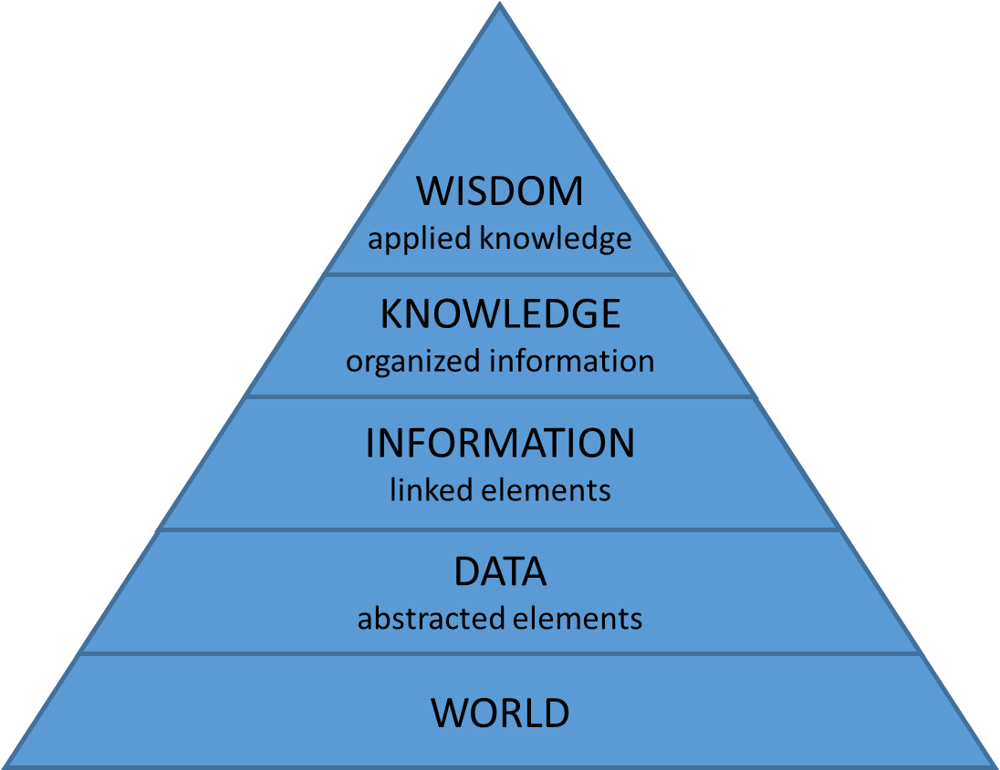
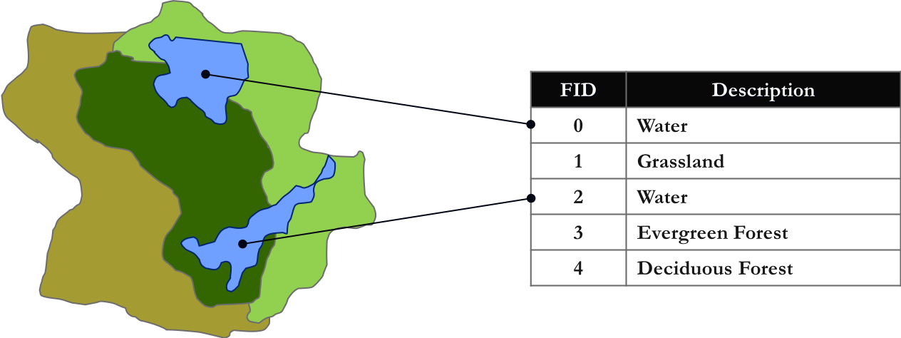
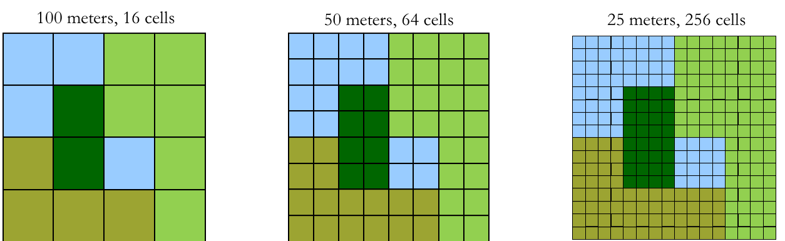
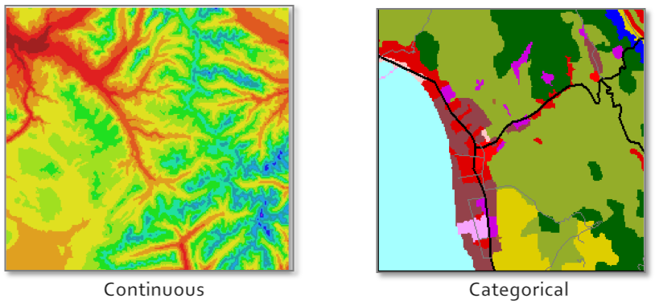

DCN - Planetears
Geospatial Data Curation
an introduction
an introduction
Jennifer Moore - j.moore@wustl.edu
Melinda Kernik - kerni016@umn.edu
Leighton Christiansen - Leighton.christiansen@dot.gov
Timothy Norris - tnorris@miami.edu
Kelly Grove - kegrove@fsu.edu
Melinda Kernik - kerni016@umn.edu
Leighton Christiansen - Leighton.christiansen@dot.gov
Timothy Norris - tnorris@miami.edu
Kelly Grove - kegrove@fsu.edu
Defining GIS
- Geographic Information System
- collections of tools, data, hardware, and people
- Geographic Information Science
- systematic inquiry into research questions about the relationship between GIS and socio-natural systems
- Geographic Information conStruction
- tool building for storage, collection or analysis of geospatial data
Wright, D. J., Goodchild, M. F., & Proctor, J. D. (1997). Demystifying the Persistent Ambiguity of GIS as ‘Tool’ versus ‘Science’.
Annals of the Association of American Geographers, 87(2), 346-362. doi:10.1111/0004-5608.872057

GIS as a collection of datasets that are organized in a systemic way (as layers).
The system of organization can be digital (software) or analog (drawn on paper).
The actual process of organization is done with a purpose by human beings.
The system of organization can be digital (software) or analog (drawn on paper).
The actual process of organization is done with a purpose by human beings.
Geospatial Abstractions

- Physical Model
(files on disk) - Logical Model
(data structures - vector and raster) - Conceptual Model
(discrete or continuous) - Reality
(the world out there)
Key elements of GIS Assemblages
- Tool set
- collection of software programs
- in some cases referred to as a stack
- Data model
- Relational databases (tables)
- Extensible data models (trees)
- Raster data (images)
- Scripting/programming languages
Common Desktop GIS Assemblages
Environmental Systems Research Institute (ESRI)
ArcGIS Pro, ArcGIS Desktop, ArcGIS Online
- Tool set
- ArcGIS Desktop
- ArcGIS Pro *NEW*
- Relational data model
- shapfiles (.shp)
- geodatabases (.gdb)
- geotiffs (.tif)
- database servers (SQLServer, posgreSQL)
- Scripting languages
- python
Common GIS Assemblages
Quantum GIS - QGIS (FOSS)
- Tool set
- QGIS - http://www.qgis.org/en/site/
- base: Geospatial Data Abstraction Library (GDAL)
- base: Open GIS Reference (OGR)
- Relational and Tree data model
- shapfiles (.shp) (relational)
- json (.geosjon) (trees)
- geotiffs (.tif) (raster)
- relational database servers (postgreSQL, oracle)
- Scripting languages
- python
Common GIS Assemblages
Python or R (FOSS)
- Tool set
- Python - https://www.python.org/
- R - https://www.r-project.org/
- packages: GDAL/OGR, sp
- leaflet for visualization
- Relational and Tree data model
- raw text, csv (tables)
- raw text, json, geojson (trees)
- raw text, grids (raster)
- Scripting languages
- Python
- R
Geospatial Data
|
|
|
|
Vector Data Model
- Points, Lines and Polygons
- all based on x,y coordinate pairs of geographic data
- lines and polygons are built from groups of points
- attribute data is linked to points, lines, or polygons (features)
- each feature is associated with a unique record in an attribute table

Vector Data Model
- Common File Formats
| Name | Extension | Source |
| shapefile | .shp * | ESRI |
| geojson | .json | open |
| geodatabase | .gdb | ESRI |
| google earth | .kml | open |
| autoCAD | .dxf .dwg | AutoDesk |
* .shp is the main file extension, others include: .shx .dbf .sbn .prj
(and more - be careful!!)
(and more - be careful!!)
Raster Data Model
- Grids of Rows and Columns
- each cell represents an x,y coordinate
- each cell has a specific size on the surface of the earth (scale)
- cell scale is based on the resolution of the image
- each cell has only one value (color or categorical)

Raster Data Model
- Resolution
- Original resolution of the collected data limits spatial accuracy
- Can’t improve by replicating cells to create smaller size cells
- Location implied; rounded to cell coordinate (center of cell)

Raster Data Model
- Types of Data
- Continuous
elevation, temperature - Categorical/Discrete
land use

Raster Data Model
- Common File Formats
| Name | Extension | Source |
| geotiff | .tiff .tif | open |
| jpg | .jpg | open |
| Arcinfo GRID | ESRI | |
| ERDAS imagine | .img | ERDAS |
* grids are stored in directories with many files all with the extension .adf; all files must be present.
and Slippy Data (tiles) ...
- In ESRI you have several choices - add basemap
- for QGIS, google search for ...
- NOT suitable for printing!! The real alternative is good raster data
Map Projections and
Coordinate Systems
Coordinate Systems
Image: D.M. Swart
Artistic cartography:
creative ways to peel the globe
Artistic cartography:
creative ways to peel the globe
Coordinate Reference Systems
- Datum
- Geographic coordinate system
- Projected coordinate system
- Geospatial data must have: datum + geographic coordinate system
- Projected coordinate systems are optional
(but needed for measurement)
Datum
- Center of the earth?
- That which is given?
- Ellipsoid
mathematically defined surface approximating the shape of the earth - Geoid
surface of the earths gravity field - approx sea level
Geographical Coordinate Systems
- Latitude and Longitude - spherical coordinates
- Very common, but cannot be used for measurement
- Things to remember:
- ESPG - European Petroleum Survey Group
- WGS 84 - most common globally - ESPG:4326
- NAD 83 - most common in the United States - ESPG:4269
Projected Coordinate Systems
- meters or feet - Cartesian coordinates
- Used for measurement and mapping
- Things to remember:
- Projected Coordinate Systems are specific to the area being mapped
- In the USA: the "State Plane System"
- Around the Globe: the "UTM Grid"
- For web based mapping systems
WGS 84 Web Mercator - ESPG:3857
Projected Coordinate Systems (more)
Projection Surfaces
Tissot and Distortion

Tissot's ellipses on an unprojected (lat/long) earth
Universal Transverse Mercator - UTM

The 60 UTM coordinate system zones, each divided into north and south halves at the equator
State Plane
Other Projections